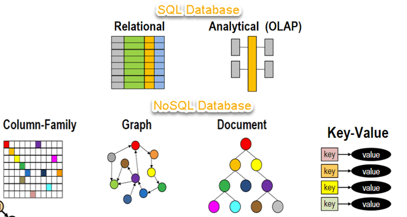
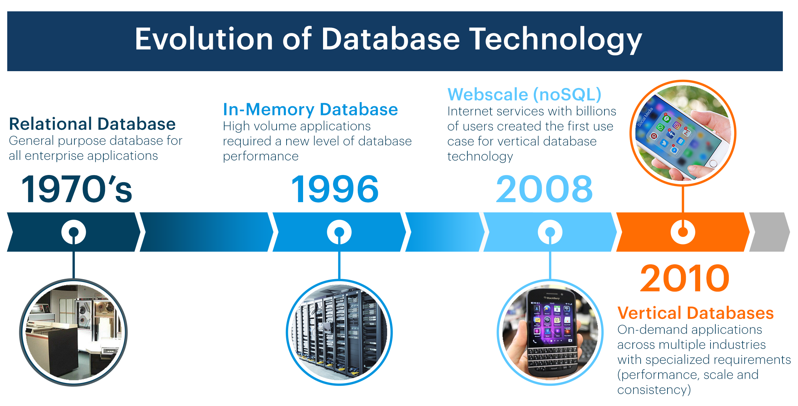

-Veritabanı, genellikle bir bilgisayar sisteminden elektronik olarak depolanan ve erişilen organize bir veri koleksiyonudur. veritabanları daha karmaşık olduğu durumlarda genellikle formel tasarımı kullanılarak ve modelleme teknikleri geliştirilmektedir.
-Belirli bir tarzda organize edilmiş bilgi “koleksiyon”udur.
Veritabanı Türleri:

SQL, veriyi sorgulamak, manipüle etmek ve tanımlamak ve aynı zamanda erişim kontrolü sağlamak üzere neredeyse tüm ilişkisel veritabanlarında kullanılan bir programlama dilidir. SQL ilk olarak 1970'li yıllarda Oracle'ın büyük katkıları ile IBM'de geliştirilmiş ve daha sonra SQL ANSI standardı uygulanmış ve SQL IBM, Oracle ve Microsoft gibi şirketlerden pek çok uzantının temelini atmıştır. SQL günümüzde oldukça yaygın bir şekilde kullanılsa da yeni programlama dilleri geliştirilmeye başlandı.
Veritabanları, 1960'lı yılların başlarında ortaya çıkmalarından bu yana radikal bir evrim sürecinden geçmiştir. Hiyerarşik veritabanı gibi navigasyonel veritabanları (ağaç benzeri bir modeli temel alır ve yalnızca bir kaynaktan çoklu alıcıya doğru ilişkiye olanak sağlar) ve ağ veritabanı (çoklu ilişkilere olanak sağlayan daha esnek bir model), veriyi depolamak ve manipüle etmek üzere kullanılan orijinal sistemlerdi. Bu ilk sistemler kolay olsa da esnekti. 1980'li yıllarda ilişkisel veritabanları popüler oldu ve ardından 1990'lı yıllarda nesne odaklı veritabanları ortaya çıktı. Daha yakın bir zamanda ise, internetin büyümesine ve yapılandırılmamış verinin daha hızlı bir şekilde işlenmesine duyulan ihtiyaca yanıt olarak NoSQL veritabanları kullanılmaya başlandı. Günümüzde ise bulut veritabanları ve kendi kendini yöneten veritabanları veri toplama, depolama, yönetme ve kullanma konusunda çığır açıyor.

Çok sayıda farklı veritabanı türü bulunur. Belirli bir organizasyon için ideal veritabanı, organizasyonun veriyi nasıl kullanmayı amaçladığına bağlı olarak değişiklik gösterir.
İlişkisel veritabanları: İlişkisel veritabanları 1980'li yılların sonlarında piyasada hakimiyet kazandı. İlişkisel veritabanındaki öğeler, sütunlar ve satırlardan oluşan bir tablo kümesi şeklinde organiza edilir. İlişkisel veritabanı teknolojisi, yapılandırılmış bilgilere en verimli ve esnek şekilde erişme olanağını sağlar.
Nesne odaklı veritabanları: Nesne odaklı bir veritabanındaki bilgiler, tıpkı nesne odaklı programlamada olduğu gibi nesneler biçiminde temsil edilir.
Dağıtılmış veritabanları:Dağıtılmış veritabanı, farklı yerlerde bulunan iki veya daha fazla dosyadan oluşur. Veritabanı, farklı ağlara yayılan ya da aynı fiziksel konumda yer alan birden fazla bilgisayarda depolanabilir.
Veri ambarları: Merkezi bir veri havuzu olan veri ambarı, özel olarak hızlı sorgulama ve analiz amaçlarıyla tasarlanmış bir veritabanı türüdür.
NoSQL veritabanları:NoSQL veya ilişkisel olmayan bir veritabanı, yapılandırılmamış ve yarı yapılandırılmış verinin depolanmasına ve manipüle edilmesine olanak sağlar (veritabanına eklenen tüm verinin nasıl oluşturulması gerektiğini tanımlayan ilişkisel veritabanının zıttıdır). NoSQL veritabanları, web uygulama yazılımlarının daha yaygın ve daha karmaşık hale gelmesi ile birlikte popülerlik kazandı.
Grafik veritabanları: Grafik veritabanı, veriyi birimler ve birimler arasındaki ilişkiler açısından depolar.
OLTP veritabanları:OLTP veritabanı, birden fazla kullanıcı tarafından çok sayıda işlemin gerçekleştirilmesi için tasarlanmış hızlı ve analitik bir veritabanıdır.
Günümüzde onlarca veritabanı türü kullanılmaktadır. Daha az yaygın olan diğer veritabanları bilimsel, finansal ya da diğer işlevlere özel olarak tasarlanmıştır. Farklı veritabanı türlerine ek olarak, bulut ve otomasyon gibi radikal ilerlemeler ve teknoloji geliştirme yaklaşımlarındaki değişiklikler veritabanlarının rotasını yepyeni yerlere çeviriyor. En yeni veritabanlarından bazıları şu şekilde sıralanabilir:
Açık kaynak veritabanları:Açık kaynak veritabanı sistemi, kaynak kodu açık kaynak olan bir sistemdir. Bu tür veritabanları SQL veya NoSQL veritabanları olabilir.
Bulut veritabanları:Bulut veritabanı, yapılandırılmış veya yapılandırılmamış veriden oluşan bir koleksiyon olup özel, genel ya da hibrit bulut bilişim platformunda yer alır. İki tür bulut veritabanı modeli bulunur: geleneksel ve servis olarak veritabanı (DBaaS). DBaaS sayesinde yönetim görevleri ve bakım işlemleri servis sağlayıcı tarafından gerçekleştirilir.
Çoklu model veritabanıÇoklu model veritabanları, farklı veritabanı türlerini tek bir entegre arka uçta buluşturur. Buna göre çeşitli veri türlerini içerebilirler.
Belge/JSON veritabanı:Belge odaklı bilgilerin depolanması, alınması ve yönetilmesi için tasarlanan belge veritabanları, veriyi satırlar ve sütunlar yerine JSON biçiminde depolamak için modern bir yöntem sunar.
Kendi kendini yöneten veritabanları:En yeni ve en ezber bozan veritabanı türü, kendi kendini yöneten veritabanları (aynı zamanda otonom veritabanları olarak bilinir), geleneksel olarak veritabanı yöneticileri tarafından gerçekleştirilen ince ayar, güvenlik, yedekleme, güncelleme ve diğer rutin yönetim görevlerini otomatikleştirmek üzere makine öğreniminden yararlanan bulut tabanlı çözümlerdir.
 Oracle
Oracle